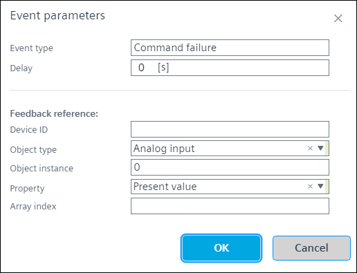
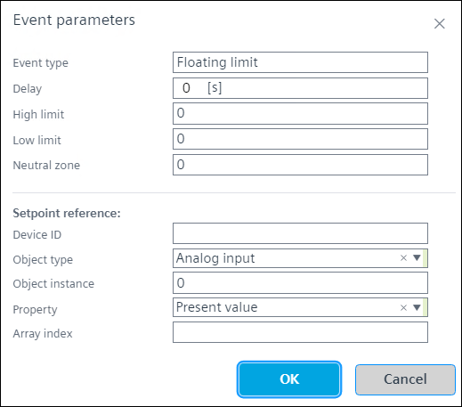
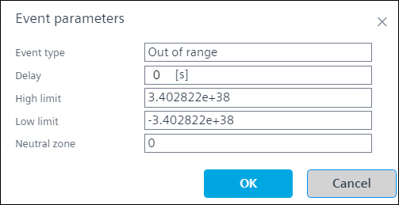
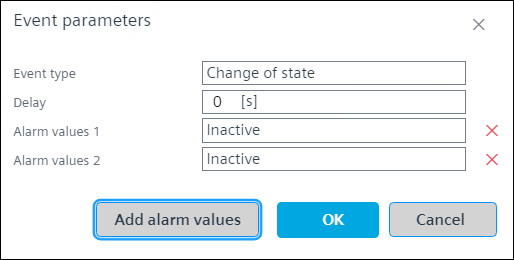
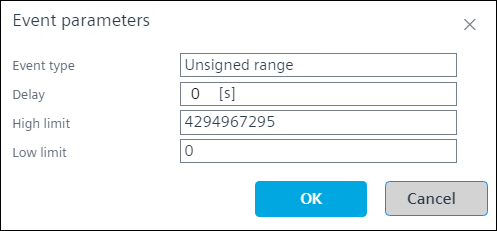
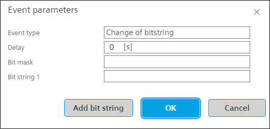
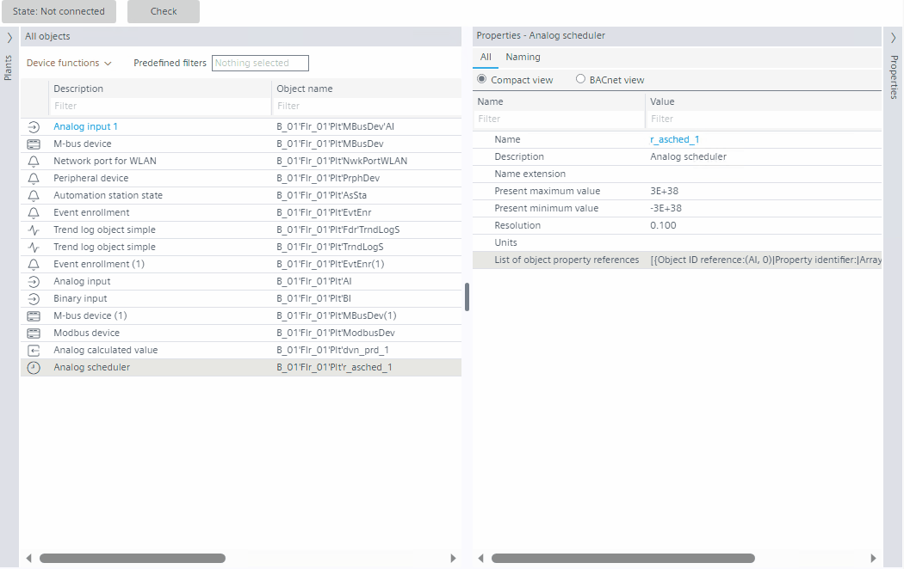
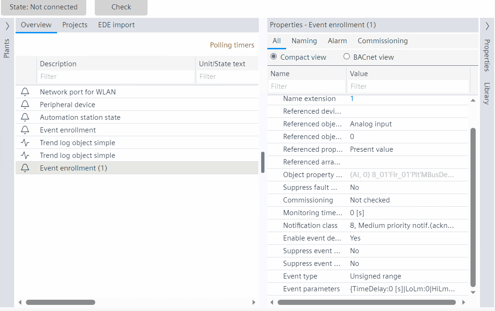

配置事件注册对象
事件注册的配置在Properties部分。此功能使用离线和在线模式。
看Events.
- Go to Engineering > BACnet references and create an event enrollment object, see Creating an event enrollment object - Plants navigation view
- In the Properties view, click Event parameters.
Note: The Reference device instance number and Reference object type fields are mandatory.
Configuring Command failure event type
请参阅命令失败。
- Click on the event enrollment object and go to Properties.
NOTE: By default the present values, based on the object type are populated in the Properties view. - In Properties, select Command failure in Event type.
- Click Event parameters.
- The Event parameters dialog box opens.

- Set the time in seconds in the Delay field.
- In the Feedback reference section, enter the required values in Device ID, Object instance, and Array index fields respectively.
- Select the Object type and Property from the drop-down list, or, type the description or number in the Object type and Property. See Hybrid control.
- The results are displayed accordingly, then click the required value.
- Click Ok.
- You have configured the command failure event type.
Configuring Floating limit event type
请参阅浮动限制。
- Click on the event enrollment object and go to Properties.
Note: By default the present values, based on the object type are populated in the Properties view. - In Properties, select Floating limit in Event type.
- Click Event parameters.
- The Event parameters dialog box opens.

- Set the High limit, Low limit values, and the time in seconds in the Delay field.
- Enter the value in Neutral zone.
- In the Setpoint reference section, enter the required values in Device ID, Object instance, and Array index fields respectively.
- Select the Object type and Property from the drop-down list, or, type the description or number in the Object type and Property. See Hybrid control.
- The results are displayed accordingly, then click the required value.
- Click Ok.
- You have configured the floating limit event type.
Configuring Out of range event type
请参阅超出范围和无符号范围。
- Click on the event enrollment object and go to Properties.
Note: By default the present values, based on the object type are populated in the Properties view. - In Properties, select Out of range in Event type.
- Click Event parameters.
- The Event parameters dialog box opens.

- Enter the time in seconds in the Delay field, and set the High limit and Low limit in the respective fields.
- Click Ok.
- You have configured the out of range and unsigned range event types.
Configuring Change of state event type
请参阅状态更改。
- Click on the event enrollment object and go to Properties.
Note: By default the present values, based on the object type are populated in the Properties view. - In Properties, select Change of state in Event type.
- The Event property states type is enabled.
Note: Unsigned and state texts are enabled if object remains in the same AS. - Define the property state type from the drop-down list. See the below table.
- Click Event parameters.
- The Event parameters dialog box opens.

- Set the time in seconds in the Time delay field.
- Add the alarm values from the drop-down list.
Note: The drop-down list consists of Inactive and Active alarm values. - Click Ok.
- To add more alarm values, click Add alarm values.
Note: The alarm values limit is 12. - To delete the alarm value, select the alarm value and, click .
- You have configured the change of state event type.
事件属性状态类型 | 报警值 |
|---|---|
布尔值 |
|
二进制值 |
|
方案价值 |
|
可靠性 |
|
系统状态 |
|
无符号值 |
|
Configuring Unsigned event type
无符号范围类似于状态更改事件类型。请参阅超出范围和无符号范围。
- Click on the event enrollment object and go to Properties.
Note: By default the present values, based on the object type are populated in the Properties view. - In Properties, select Unsigned range in Event type.
- Click Event parameters.
- The Event parameters dialog box opens.

- Enter the time in seconds in the Delay field, and set the High limit and Low limit in the respective fields.
- Click Ok.
- You have configured the out of range and unsigned range event types.
Configuring Change of bitstring event type
请参阅位串的更改。
- Click on the event enrollment object and go to Properties.
Note: By default the present values, based on the object type are populated in the Properties view. - In Properties, select Change of bitstring in Event type.
- Click Event parameters.
- The Event parameters dialog box opens.

- Set the time in seconds in the Time delay field.
- Select the values from the drop-down list in the Bitmask and Bitstring fields.
The drop-down list contains the alarm values; In alarm, Fault, Overridden, and Out of service. - Click Ok.
Note: The alarm is generated when the bitmask and bitstring values are same. - To add more bitstring values, click Add bitstring.
Note: You can add 5 bistring values. - To delete the bitstring value, select the bitstring and, click .
- You have configured the change of bitstring event type.
Hybrid control
混合控制是一种功能，用户可以通过输入描述或 ID/number. 从下拉列表中选择一个值，这适用于Event enrollment目的 -Floating limit和Command failure事件类型；和Scheduler对象。
看Configuring list of object property references within a scheduler object和Configuring event enrollment objects.
Case 1: Enter the description
以调度程序对象配置为例。

这仅适用于Floating limit和Command failure事件类型；和调度程序引用对象类型。

Case 2: Enter the ID/number
以事件注册配置为例。
这仅适用于Floating limit和Command failure事件类型；和调度程序引用对象类型。
